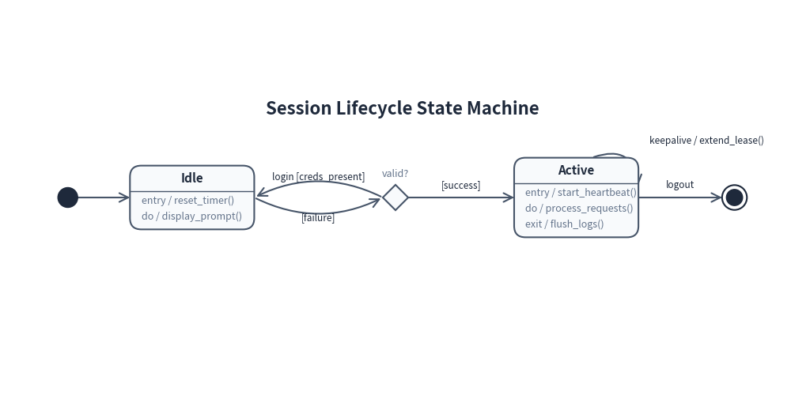
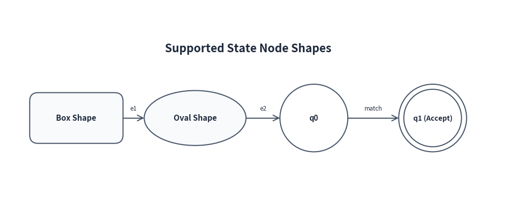
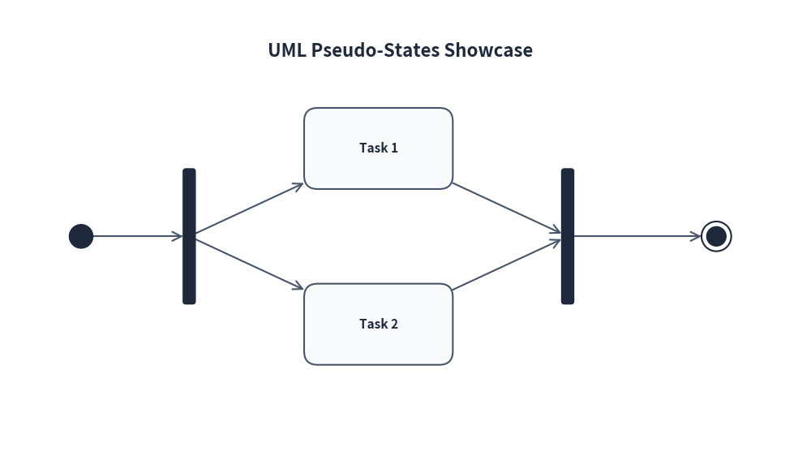
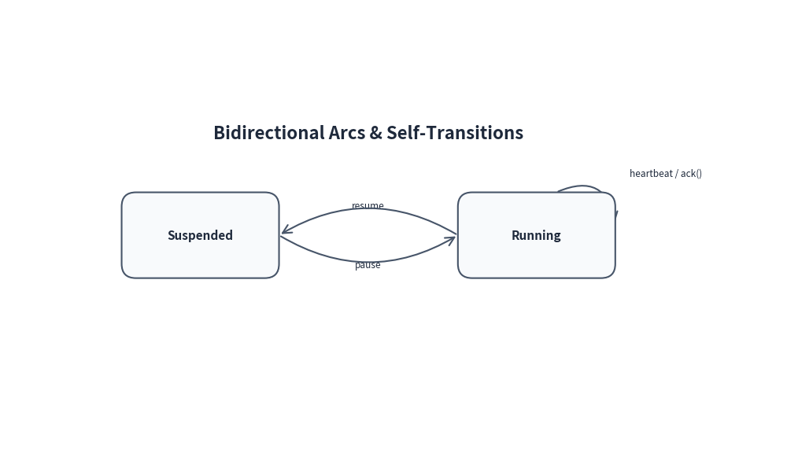

State Diagrams
drawlib.diagrams.state_diagram provides a declarative, pure-Python framework for UML Statecharts and Finite State Machine (FSM) diagrams.
It supports standard UML 2.0 notations, including rounded state cards with internal action compartments (entry, do, exit), automaton circular shapes, pseudo-states (initial, final, choice, fork/join), and curved arc transitions.
1. Core Concepts
| Component | Class | Description |
|---|---|---|
| Container | StateDiagram |
Top-level container managing states, pseudo-states, transitions, and canvas layout. |
| State Node | State |
State node supporting 5 shapes: "box", "oval", "circle", "double_circle", and "text_only". |
| Initial State | InitialState |
UML initial pseudo-state (solid filled circle). |
| Final State | FinalState |
UML final state (bullseye: outer ring with inner solid circle). |
| Choice Node | ChoiceState |
Branching decision pseudo-state (diamond shape). |
| Fork / Join | ForkJoinState |
Synchronization bar for concurrent transitions ("horizontal" or "vertical"). |
| Transition Edge | StateTransition |
Directed transition edge created via node.to(target, ...). Supports event, guard, action, and curved arc routing. |
2. Quick Start
Below is a state machine illustrating an authentication and session lifecycle:
from drawlib import canvas
from drawlib.diagrams.state_diagram import (
ChoiceState,
FinalState,
InitialState,
State,
StateDiagram,
)
canvas.config(width=140, height=70)
sd = StateDiagram(title="Session Lifecycle State Machine")
# 1. Define States and Pseudo-States
init = sd.add(InitialState(), xy=(12.0, 35.0))
idle = sd.add(
State(
"Idle",
shape="box",
entry="reset_timer()",
do="display_prompt()",
),
xy=(34.0, 35.0),
)
authenticating = sd.add(ChoiceState(name="valid?"), xy=(70.0, 35.0))
active = sd.add(
State(
"Active",
shape="box",
entry="start_heartbeat()",
do="process_requests()",
exit="flush_logs()",
),
xy=(102.0, 35.0),
)
final = sd.add(FinalState(), xy=(130.0, 35.0))
# 2. Connect States with .to()
init.to(idle)
# Idle to Choice (Curved upward)
idle.to(authenticating, event="login", guard="creds_present", bend=0.25)
# Choice outcomes
authenticating.to(active, guard="success")
authenticating.to(idle, guard="failure", bend=0.25)
# Self-transition loop on Active
active.to(active, event="keepalive", action="extend_lease()")
# Active to Final
active.to(final, event="logout")
sd.draw(xy=(0.0, 0.0))

3. Node Visual Shapes
State supports 5 distinct shape types via the shape parameter:
| Shape | Value | Typical Usage |
|---|---|---|
| Box (default) | "box" |
UML state with rounded corners and optional action compartments. |
| Oval | "oval" |
Capsule / rounded pill shape for simplified diagrams or UI flows. |
| Circle | "circle" |
Automaton / DFA / NFA states. Transparent background by default. |
| Double Circle | "double_circle" |
Automaton accepting / terminal states. Transparent background by default. |
| Text Only | "text_only" |
Borderless text state for annotations or minimalist diagrams. |
from drawlib import canvas
from drawlib.diagrams.state_diagram import State, StateDiagram
canvas.config(width=120, height=50)
sd = StateDiagram(title="Supported State Node Shapes")
s_box = sd.add(State("Box Shape", shape="box"), xy=(18.0, 22.0))
s_oval = sd.add(State("Oval Shape", shape="oval"), xy=(46.0, 22.0))
s_circle = sd.add(State("q0", shape="circle"), xy=(74.0, 22.0))
s_double = sd.add(State("q1 (Accept)", shape="double_circle"), xy=(102.0, 22.0))
s_box.to(s_oval, event="e1")
s_oval.to(s_circle, event="e2")
s_circle.to(s_double, event="match")
sd.draw(xy=(0.0, 0.0))

4. Internal Actions (Entry, Do, Exit)
In UML Statecharts, a state can declare internal actions that do not trigger transitions:
entry: Executed immediately upon entering the state.do: Ongoing activity performed while in the state.exit: Executed immediately prior to exiting the state.
These can be passed during initialization or chained with add_action():
state = State(
"Processing",
entry="init_socket()",
do="read_stream()",
exit="close_socket()",
)
# Chaining custom actions
state.add_action("custom", "notify_observers()")
When actions are present, the state card is automatically rendered with a distinct header compartment and divider line.
5. Pseudo-States
UML pseudo-states control the flow of execution:
from drawlib import canvas
from drawlib.diagrams.state_diagram import (
ChoiceState,
FinalState,
ForkJoinState,
InitialState,
State,
StateDiagram,
)
canvas.config(width=120, height=70)
sd = StateDiagram(title="UML Pseudo-States Showcase")
init = sd.add(InitialState(), xy=(12.0, 35.0))
fork = sd.add(ForkJoinState(orientation="vertical", length=20.0), xy=(28.0, 35.0))
task1 = sd.add(State("Task 1", shape="box"), xy=(56.0, 48.0))
task2 = sd.add(State("Task 2", shape="box"), xy=(56.0, 22.0))
join = sd.add(ForkJoinState(orientation="vertical", length=20.0), xy=(84.0, 35.0))
final = sd.add(FinalState(), xy=(106.0, 35.0))
init.to(fork)
fork.to(task1)
fork.to(task2)
task1.to(join)
task2.to(join)
join.to(final)
sd.draw(xy=(0.0, 0.0))

6. Transitions and Arc Routing
6.1 Structured Labels (event, guard, action)
Transitions support formal UML label syntax:
event [guard] / action
# Automatically formatted as "submit [valid_token] / persist()"
idle.to(active, event="submit", guard="valid_token", action="persist()")
# Explicit full label override
idle.to(active, label="Custom label text")
6.2 Curved Arcs & Bidirectional Transitions
When two states transition back and forth, setting bend creates elegant curved arcs:
from drawlib import canvas
from drawlib.diagrams.state_diagram import State, StateDiagram
canvas.config(width=110, height=65)
sd = StateDiagram(title="Bidirectional Arcs & Self-Transitions")
s1 = sd.add(State("Suspended", shape="box"), xy=(28.0, 32.0))
s2 = sd.add(State("Running", shape="box"), xy=(75.0, 32.0))
# Forward transition curves upward
s1.to(s2, event="resume", bend=0.3)
# Backward transition curves downward
s2.to(s1, event="pause", bend=0.3)
# Self-transition loop curving around the top-right corner
s2.to(s2, event="heartbeat", action="ack()")
sd.draw(xy=(0.0, 0.0))

6.3 Self-Transitions
Calling state.to(state) creates a self-transition loop.
By default, the loop departs from the top boundary, sweeps across the corner, and returns to the right boundary with its label clearly positioned outside the corner.